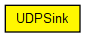

Consumes and prints packets received from the UDP module.
The following diagram shows usage relationships between types. Unresolved types are missing from the diagram. Click here to see the full picture.
The following diagram shows inheritance relationships for this type. Unresolved types are missing from the diagram. Click here to see the full picture.

| Name | Type | Default value | Description |
|---|---|---|---|
| localPort | int |
if -1, app doesn't bind in UDP |
| Name | Value | Description |
|---|---|---|
| display | i=block/sink |
| Name | Direction | Size | Description |
|---|---|---|---|
| udpIn | input | ||
| udpOut | output |
// // Consumes and prints packets received from the UDP module. // simple UDPSink like UDPApp { parameters: int localPort; // if -1, app doesn't bind in UDP @display("i=block/sink"); gates: input udpIn @labels(UDPControlInfo/up); output udpOut @labels(UDPControlInfo/down); }